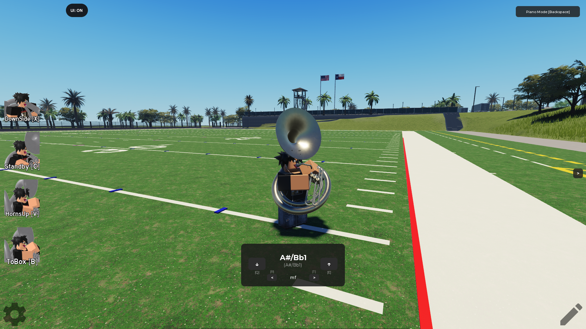
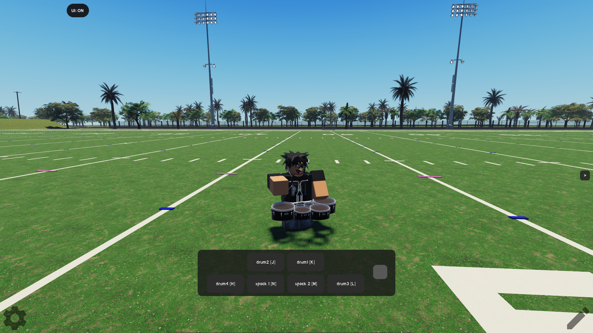
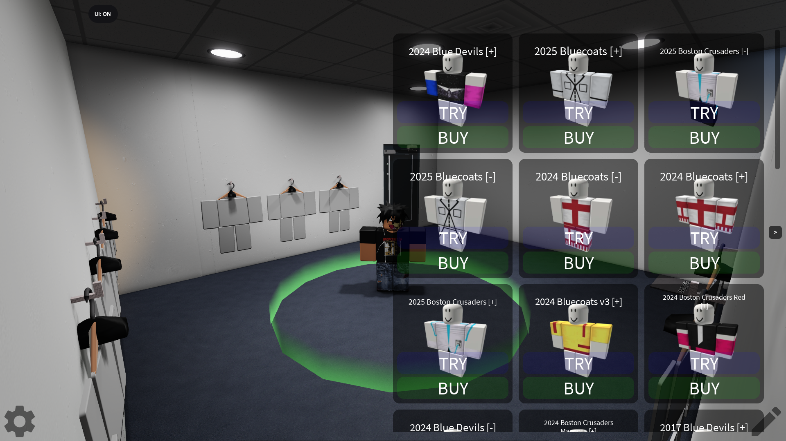
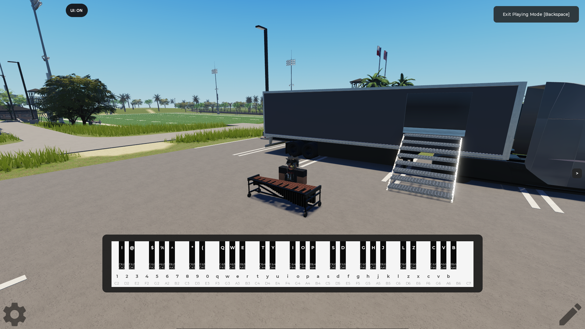
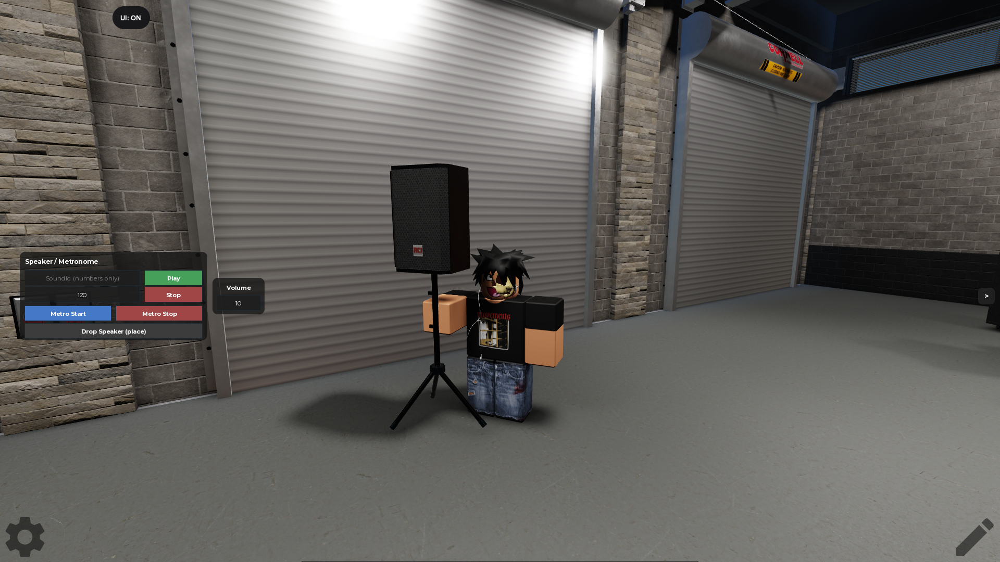
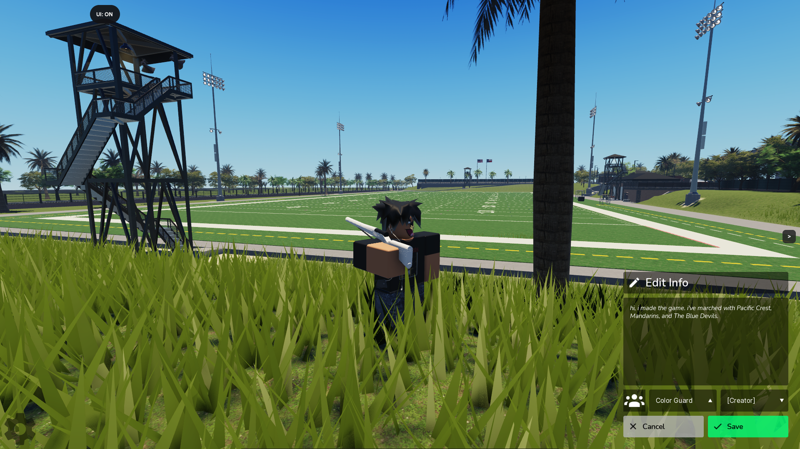
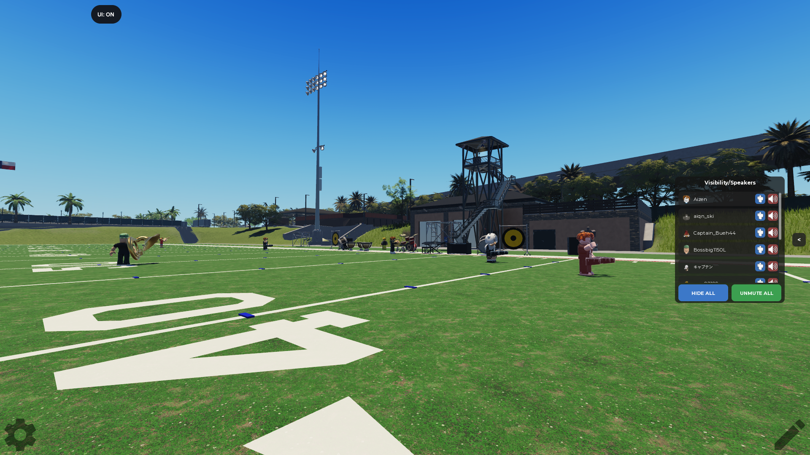
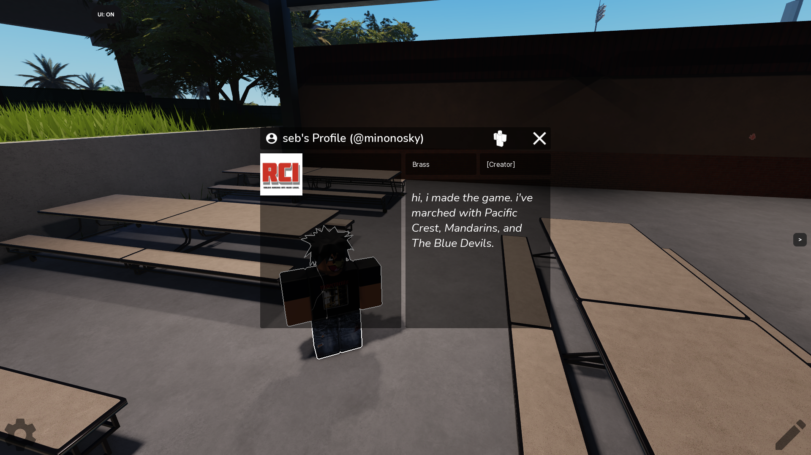

Marching Band:
Rehearsal Site
- 585K
- VISITS
- 9.6K
- FAVORITES
- 31
- PLAYING









Marching Band: Rehearsal Site is a passion project i began developing in 2024 after i came across a video of a player, marching their real life show drill in a similar Roblox game featuring a field with instruments. i wanted to make a more in depth football field with accurate markings and hashes for individuals to learn their drill efficiently, so i did.
since then, the game has grown significantly. featuring a wide selection of playable instruments ranging from brass, woodwind, battery, and front ensemble sections. other features include instrument/avatar poses, interactive map/fields, in-game uniform shop, customizable player profiles, player visibility controls, a speaker/metronome tool, and more.
Ro-Corps International (RCI) is the name of the group associated with the game. i named it after the real non-profit organization Drum Corps International (DCI), which hosts events and competitions for drum corps.
the inspiration for this project came from my heavy background in the marching arts. i did marching band in high school and afterwards performed with 3 separate world class drum corps.